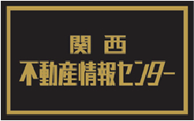

会員シンボルマークは私たちの誇りであり、お客様への「信用と信頼」をお約束する"証し"でもあります。
「関西不動産情報センター会員」と称された私たちの会員シンボルマークは、お客様への「信用と信頼」をお約束するための私たちのステータスです。不動産のことならどんなことでも安心してご相談いただける窓口づくりを目指して設立されています。

所属する地区において承認を得るための審査をはじめ、入会審査委員会の面接による部会審査の承認後、運営委員会及び理事長の承認を得て入会資格が与えられます。
関西不動産情報センター会員となっていただく基本要件です。入会申し込み手続きにつきましては、関西不動産情報センター事務局までお問合せください。

JOIN
入会を
お考えの方は
こちら
CONTACT
KRICについてのご質問やご相談は
お気軽にお問い合わせください。